{kind=link}
Ask where to live in Japan and you get Tokyo, Osaka, Fukuoka. Ask people who have lived here a while and a different list comes out: Omihachiman, Hikone, Mishima, Matsue, Takayama — small historic towns with a train to a real city. This is sixty of them, with the numbers that decide whether the idea survives a winter.
The list is the one behind Japan Living Fit, this site's eight-question tool. Every column is an official figure — population, weather, land price, distance, heritage — and every town links to the tool, which is where the matching happens.
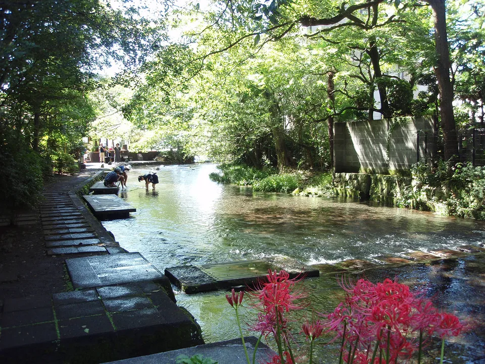
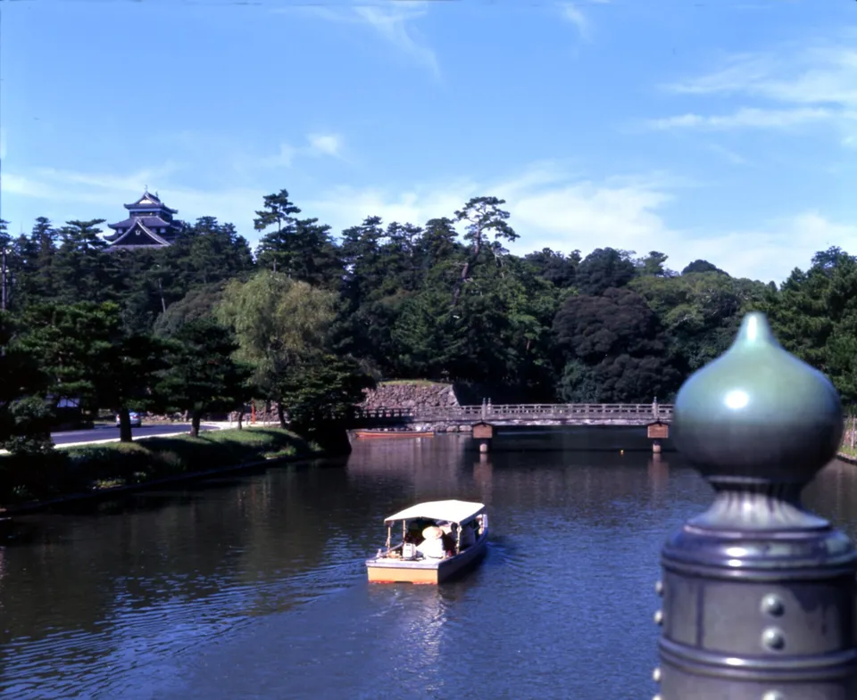
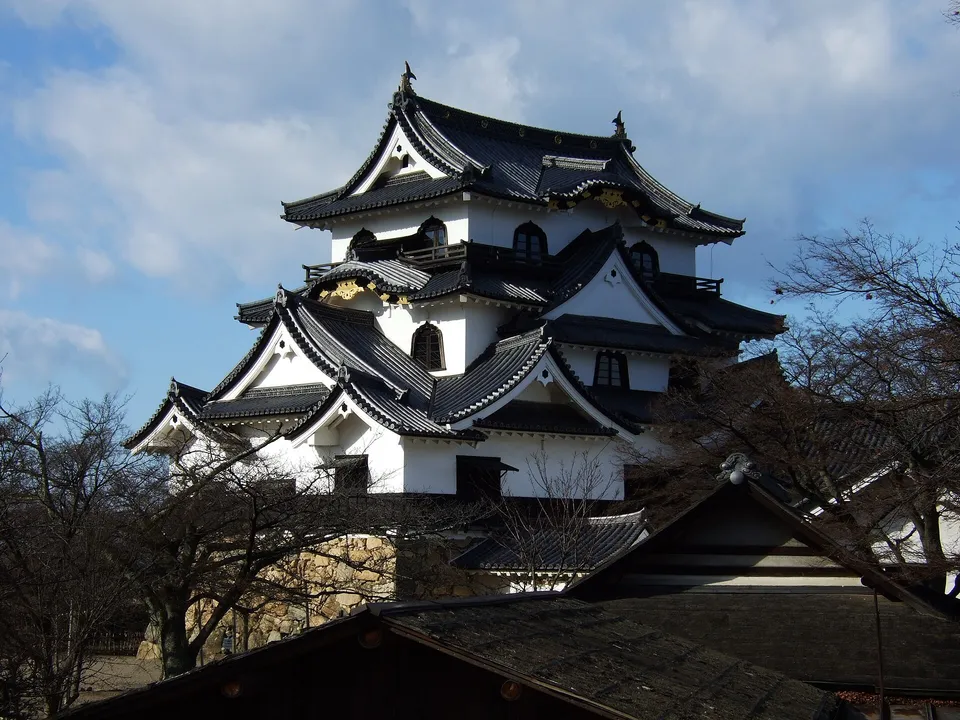
Photos: The Genbei River, spring water through central Mishima — Batholith via Wikimedia Commons, Public domain · Matsue Castle and the Horikawa moat boats — Mister99 via Wikimedia Commons, CC BY-SA 3.0 · Hikone Castle keep — a National Treasure — 日: Jnn via Wikimedia Commons, CC BY 2.1 jp
.jpg){kind=link}
{kind=link}
{kind=link}
Where this list comes from
This list is not ours to invent. It is the sixty municipalities that Japan Living Fit compares — a small tool built by this site that asks eight questions and returns the towns whose data fits your answers. The sixty were chosen to cover the kinds of place foreigners actually ask about (a small historic town near a city, a hot-spring town you could live in, an island, a real winter, a big hub for comparison), not to be a top-60.
What makes the list worth publishing on its own is the data behind it. For every town the tool holds the census population, the weather station's 30-year normals, the government's official land-price points, minutes to the nearest big city, and — from the Agency for Cultural Affairs — whether it has a preserved historic district, an original castle keep, or a National Treasure building. Those are the columns below. Nothing here is a vibe score.
Towns like Omihachiman: the water towns
Omihachiman is the town people mean when they say they want somewhere small, old and near water without being a museum: a merchant quarter of white-walled storehouses along a moat that once fed Lake Biwa, still a working town of 79,393, and 46 minutes from Kyoto. Japan Living Fit files it under water towns — places whose shape comes from a canal, a lake or spring-fed rivers. These are the others in that drawer.
Omihachiman Shiga
The Hachiman-bori moat and a preserved merchant district. 79,393 people · 3.9°/27.5° · land ¥42,200/m² · 46 min to 京都.
Mishima Shizuoka
Spring water from Mount Fuji runs in open channels through the middle of town; the Shinkansen stops here. 103,085 people · 5.9°/27.3° · land ¥97,900/m² · 69 min to 静岡.
Matsue Shimane
A castle city between a lake and a lagoon, with an original keep that is a National Treasure. 193,586 people · 4.6°/27.1° · land ¥51,600/m² · 1 min to 松江.
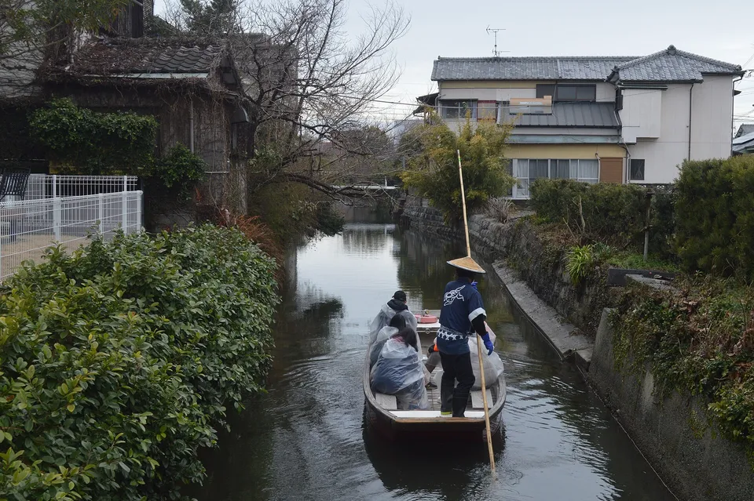
Yanagawa Fukuoka
A grid of canals in the flat Chikugo delta, still poled by boat. 60,569 people · —°/—° · land ¥26,300/m² · 64 min to 福岡.
.jpg){kind=link}
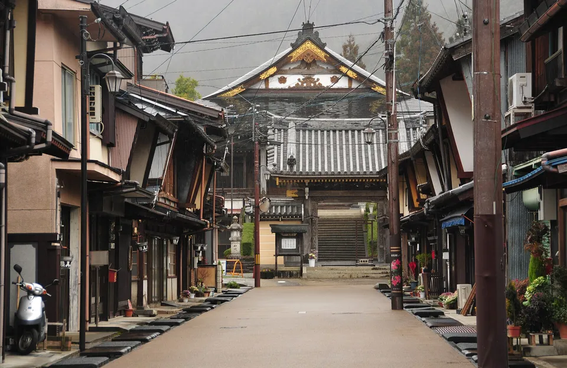
Gujo Gifu
A mountain town whose streets run with channelled river water; famous for its all-night summer dance. 35,540 people · 0.8°/25.3° · land ¥50,900/m² · 62 min to 岐阜.
{kind=link}
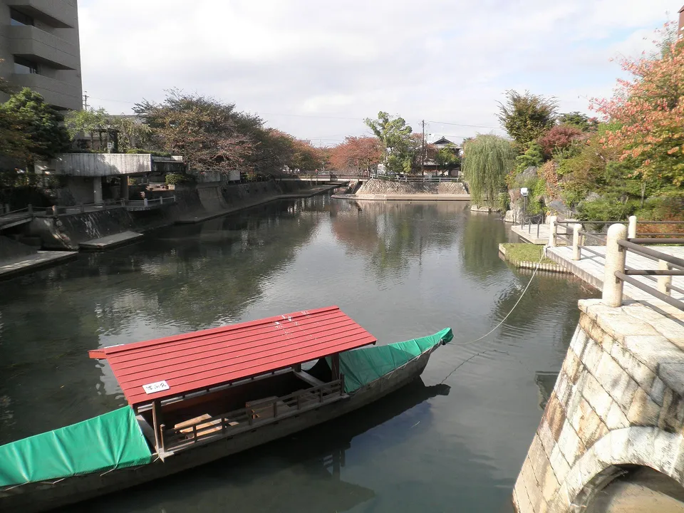
Ogaki Gifu
The "water capital" of Gifu — springs and canals inside an ordinary working city. 154,474 people · 4.7°/28.1° · land ¥52,700/m² · 19 min to 岐阜.
{kind=link}
Castle towns with an original keep
The other drawer people open after Omihachiman is castle towns: a preserved historic core around a keep, small enough to walk. Five of these still have their original wooden keep — not a concrete rebuild — which is rarer than it sounds: only twelve survive in the whole country.
Hikone Shiga
Original keep (National Treasure), a castle-town grid, and Lake Biwa. 111,647 people · 3.9°/27.5° · land ¥43,400/m² · 67 min to 岐阜.
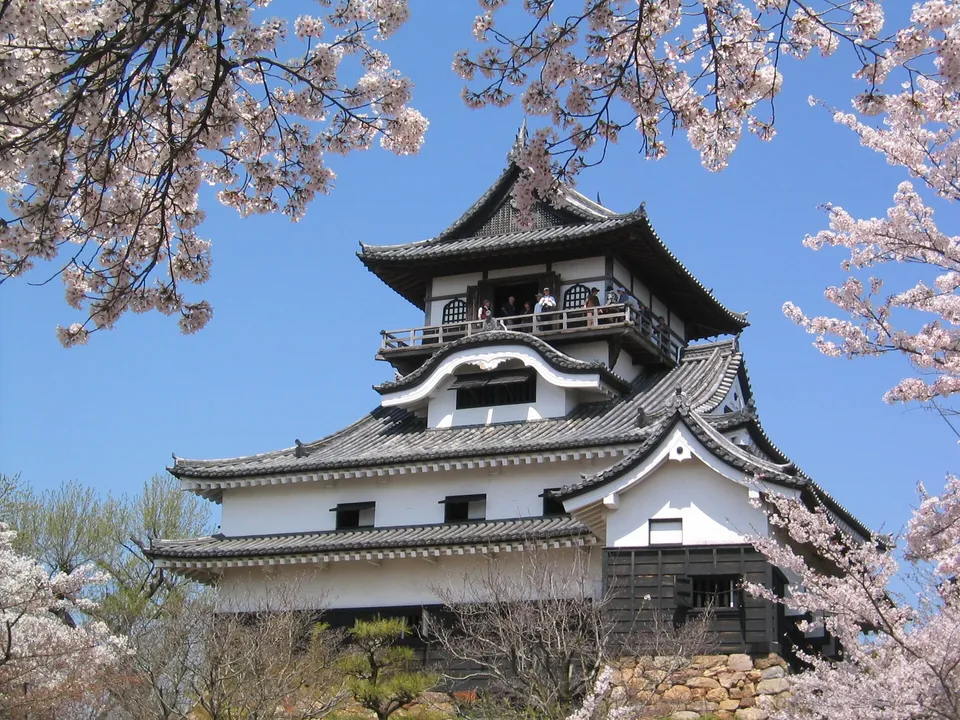
Inuyama Aichi
The oldest original keep in Japan above the Kiso River, 30 minutes from Nagoya. 69,940 people · —°/—° · land ¥61,000/m² · 25 min to 岐阜.
{kind=link}
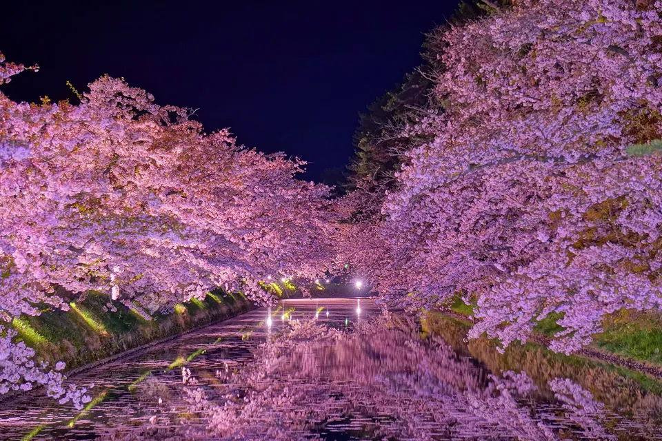
Hirosaki Aomori
Original keep, apple orchards, and one of the great cherry-blossom parks. 155,952 people · -1.5°/23.5° · land ¥31,550/m² · 45 min to 青森.
{kind=link}
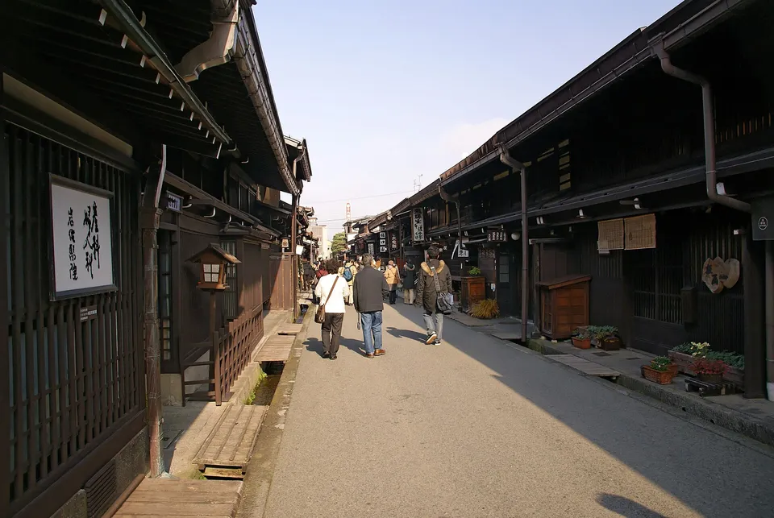
Takayama Gifu
Two preserved merchant districts in the mountains of Gifu; snow in winter. 79,355 people · -1.2°/24.4° · land ¥51,100/m² · 82 min to 富山.
{kind=link}
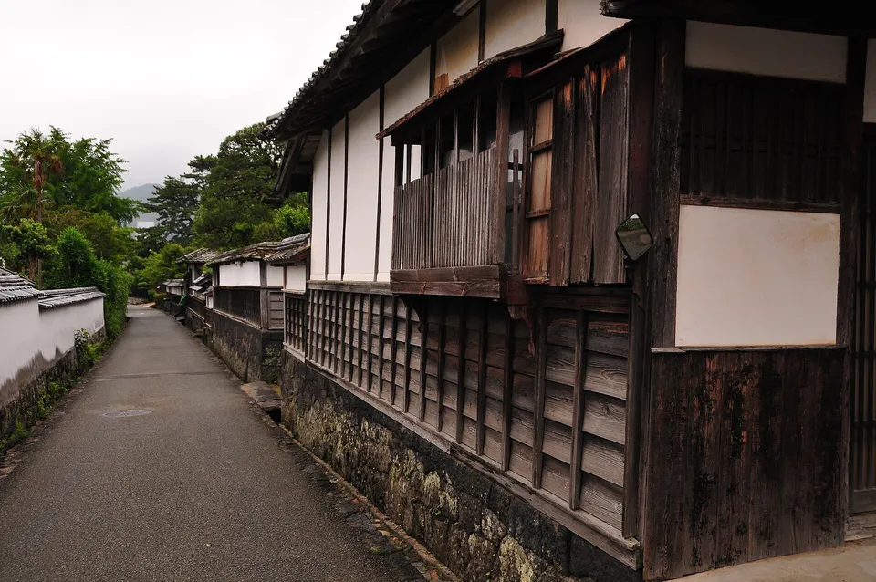
Hagi Yamaguchi
Four preserved districts and a samurai quarter on the Sea of Japan coast. 39,786 people · 5.7°/27.0° · land ¥27,300/m² · 106 min to 北九州.
{kind=link}
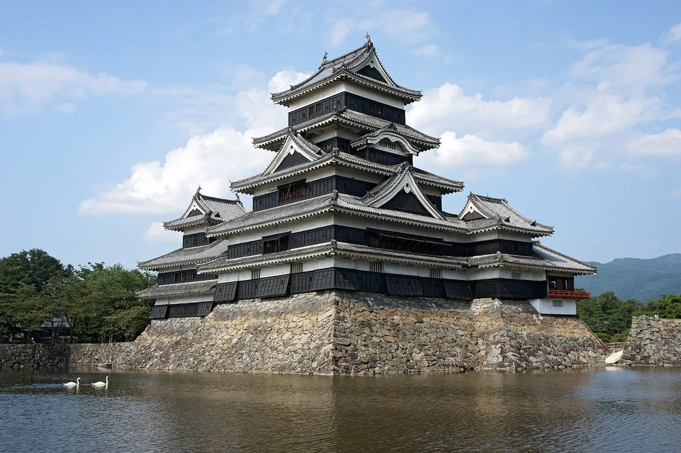
Matsumoto Nagano
The black castle, an alpine backdrop, and a proper city around it. 232,347 people · -0.3°/25.1° · land ¥52,800/m² · 69 min to 長野.
{kind=link}
The table: all 60
Sort by any number, filter by the kind of town, or type a name. Every figure is a published one: population from the 2025 census count, temperatures from the Japan Meteorological Agency station (30-year normals, January mean / August mean), land price the median of the government's official appraisal points in the municipality (¥ per m², January 2025), and minutes by road to the nearest major hub from the town's population-weighted centre.
| Town | Kind | People ▾ | Jan / Aug °C ▾ | Land ¥/m² ▾ | To a big city ▾ |
|---|---|---|---|---|---|
| Gujo郡上市 · Gifu | Water town1 preserved district | 35,540 | 0.8° / 25.3° | ¥50,900 | 62 minto 岐阜 |
| Matsue松江市 · Shimane | Water townoriginal castle keep · 1 National Treasure · coastal | 193,586 | 4.6° / 27.1°snow max 20 cm | ¥51,600 | 1 minto 松江 |
| Mishima三島市 · Shizuoka | Water towncoastal | 103,085 | 5.9° / 27.3°snow max 1 cm | ¥97,900 | 69 minto 静岡 |
| Ogaki大垣市 · Gifu | Water town | 154,474 | 4.7° / 28.1° | ¥52,700 | 19 minto 岐阜 |
| Omihachiman近江八幡市 · Shiga | Water town1 preserved district | 79,393 | 3.9° / 27.5°snow max 26 cm | ¥42,200 | 46 minto 京都 |
| Toyama富山市 · Toyama | Water towncoastal | 402,133 | 3.0° / 26.9°snow max 51 cm | ¥42,450 | 3 minto 富山 |
| Yanagawa柳川市 · Fukuoka | Water towncoastal | 60,569 | — | ¥26,300 | 64 minto 福岡 |
| Hagi萩市 · Yamaguchi | Castle town4 preserved districts · coastal | 39,786 | 5.7° / 27.0°snow max 4 cm | ¥27,300 | 106 minto 北九州 |
| Hikone彦根市 · Shiga | Castle town1 preserved district · original castle keep · 1 National Treasure | 111,647 | 3.9° / 27.5°snow max 26 cm | ¥43,400 | 67 minto 岐阜 |
| Hirosaki弘前市 · Aomori | Castle town1 preserved district · original castle keep | 155,952 | -1.5° / 23.5°snow max 88 cm | ¥31,550 | 45 minto 青森 |
| Inuyama犬山市 · Aichi | Castle townoriginal castle keep · 1 National Treasure | 69,940 | — | ¥61,000 | 25 minto 岐阜 |
| Matsumoto松本市 · Nagano | Castle townoriginal castle keep · 1 National Treasure | 232,347 | -0.3° / 25.1°snow max 26 cm | ¥52,800 | 69 minto 長野 |
| Sakura佐倉市 · Chiba | Castle town | 163,859 | 3.7° / 26.3° | ¥73,100 | 18 minto 千葉 |
| Takayama高山市 · Gifu | Castle town2 preserved districts | 79,355 | -1.2° / 24.4°snow max 55 cm | ¥51,100 | 82 minto 富山 |
| Ueda上田市 · Nagano | Castle town | 144,350 | -0.5° / 24.9° | ¥39,450 | 39 minto 長野 |
| Aso阿蘇市 · Kumamoto | Satoyama | 22,959 | 2.0° / 24.2° | ¥10,700 | 49 minto 熊本 |
| Chichibu秩父市 · Saitama | Satoyama | 54,646 | 1.8° / 25.5°snow max 18 cm | ¥59,800 | 68 minto さいたま |
| Higashiomi東近江市 · Shiga | Satoyama | 109,923 | 3.1° / 26.7° | ¥42,500 | 57 minto 京都 |
| Iiyama飯山市 · Nagano | Satoyama | 17,700 | -1.6° / 24.7°snow max 144 cm | ¥25,000 | 40 minto 長野 |
| Nanto南砺市 · Toyama | Satoyama2 preserved districts | 43,945 | 1.9° / 25.6° | ¥21,900 | 31 minto 金沢 |
| Taketa竹田市 · Oita | Satoyama | 17,696 | 3.9° / 25.7° | ¥24,000 | 49 minto 大分 |
| Beppu別府市 · Oita | Onsen towncoastal | 112,267 | 6.5° / 27.7°snow max 1 cm | ¥53,300 | 18 minto 大分 |
| Kusatsu草津町 · Gunma | Onsen town | 5,748 | -4.1° / 19.6°snow max 99 cm | ¥33,900 | 49 minto 長野 |
| Nasushiobara那須塩原市 · Tochigi | Onsen town | 112,562 | 0.9° / 23.8° | ¥24,850 | 56 minto 宇都宮 |
| Noboribetsu登別市 · Hokkaido | Onsen towncoastal | 41,991 | -4.1° / 19.6°snow max 84 cm | ¥10,350 | 101 minto 函館 |
| Shirahama白浜町 · Wakayama | Onsen towncoastal | 18,448 | 7.1° / 27.6° | ¥27,900 | 89 minto 和歌山 |
| Ureshino嬉野市 · Saga | Onsen town | 24,327 | 4.5° / 26.6° | ¥31,700 | 56 minto 長崎 |
| Yufu由布市 · Oita | Onsen town | 32,612 | 2.3° / 24.5° | ¥33,100 | 20 minto 大分 |
| Awaji淡路市 · Hyogo | Island & coastcoastal | 39,472 | 5.8° / 27.8° | ¥30,300 | 42 minto 神戸 |
| Goto五島市 · Nagasaki | Island & coastcoastal | 31,456 | 7.6° / 27.3°snow max 1 cm | ¥20,200 | 133 minto 長崎 |
| Ishigaki石垣市 · Okinawa | Island & coastcoastal | 47,735 | 18.9° / 29.4° | ¥70,300 | 301 minto 那覇 |
| Kamakura鎌倉市 · Kanagawa | Island & coast1 National Treasure · coastal | 169,870 | 6.1° / 27.0°snow max 7 cm | ¥196,000 | 23 minto 横浜 |
| Naha那覇市 · Okinawa | Island & coastcoastal | 311,073 | 17.3° / 29.0° | ¥201,000 | 2 minto 那覇 |
| Okinoshima隠岐の島町 · Shimane | Island & coastcoastal | 12,377 | 4.5° / 26.1°snow max 21 cm | ¥23,050 | 117 minto 松江 |
| Sasebo佐世保市 · Nagasaki | Island & coastcoastal | 226,189 | 7.0° / 28.0°snow max 0 cm | ¥42,800 | 66 minto 長崎 |
| Shiogama塩竈市 · Miyagi | Island & coastcoastal | 49,765 | 2.0° / 24.4°snow max 16 cm | ¥36,500 | 18 minto 仙台 |
| Shodoshima小豆島町 · Kagawa | Island & coastcoastal | 12,539 | 5.6° / 27.4° | ¥16,000 | 40 minto 高松 |
| Tsushima対馬市 · Nagasaki | Island & coastcoastal | 25,316 | 6.0° / 26.8°snow max 0 cm | ¥27,200 | 150 minto 福岡 |
| Aizuwakamatsu会津若松市 · Fukushima | Cool north | 109,015 | -0.3° / 25.2°snow max 59 cm | ¥40,700 | 56 minto 郡山 |
| Hakodate函館市 · Hokkaido | Cool north1 preserved district · coastal | 230,498 | -2.4° / 22.1°snow max 45 cm | ¥43,800 | 6 minto 函館 |
| Morioka盛岡市 · Iwate | Cool north | 278,636 | -1.6° / 23.5°snow max 36 cm | ¥51,550 | 1 minto 盛岡 |
| Obihiro帯広市 · Hokkaido | Cool north | 160,764 | -6.9° / 20.3°snow max 71 cm | ¥36,750 | 160 minto 札幌 |
| Tsuruoka鶴岡市 · Yamagata | Cool northcoastal | 113,149 | 1.7° / 25.3° | ¥20,250 | 92 minto 山形 |
| Hamamatsu浜松市 · Shizuoka | Everyday citycoastal | 765,750 | 6.3° / 27.8°snow max 0 cm | ¥78,050 | 7 minto 浜松 |
| Imabari今治市 · Ehime | Everyday citycoastal | 141,735 | 5.9° / 27.4° | ¥39,100 | 44 minto 松山 |
| Ise伊勢市 · Mie | Everyday citycoastal | 115,468 | 4.8° / 27.2° | ¥32,850 | 102 minto 名古屋 |
| Koriyama郡山市 · Fukushima | Everyday city | 313,125 | 0.9° / 24.5° | ¥65,100 | 3 minto 郡山 |
| Onomichi尾道市 · Hiroshima | Everyday citycoastal | 120,346 | 4.6° / 27.9°snow max 2 cm | ¥40,050 | 87 minto 広島 |
| Ota太田市 · Gunma | Everyday city | 219,439 | 4.1° / 27.4° | ¥34,700 | 67 minto さいたま |
| Yonago米子市 · Tottori | Everyday citycoastal | 143,246 | 4.7° / 27.3°snow max 25 cm | ¥35,000 | 34 minto 松江 |
| Amagasaki尼崎市 · Hyogo | Rail citycoastal | 457,162 | 6.2° / 28.6°snow max 1 cm | ¥194,500 | 12 minto 大阪 |
| Fukuoka福岡市 · Fukuoka | Rail citycoastal | 1,663,892 | 6.9° / 28.4°snow max 2 cm | ¥197,500 | 4 minto 福岡 |
| Kanazawa金沢市 · Ishikawa | Rail city4 preserved districts · coastal | 454,071 | 4.0° / 27.3°snow max 32 cm | ¥88,500 | 2 minto 金沢 |
| Kobe神戸市 · Hyogo | Rail citycoastal | 1,497,630 | 6.2° / 28.6°snow max 1 cm | ¥130,000 | 5 minto 神戸 |
| Kumamoto熊本市 · Kumamoto | Rail citycoastal | 730,854 | 6.0° / 28.4°snow max 1 cm | ¥76,150 | 3 minto 熊本 |
| Kyoto京都市 · Kyoto | Rail city4 preserved districts · 3 National Treasures | 1,431,713 | 4.8° / 28.5°snow max 7 cm | ¥252,000 | 2 minto 京都 |
| Okayama岡山市 · Okayama | Rail citycoastal | 707,916 | 4.6° / 28.1°snow max 1 cm | ¥60,700 | 2 minto 岡山 |
| Sapporo札幌市 · Hokkaido | Rail citycoastal | 1,964,034 | -3.2° / 22.3°snow max 97 cm | ¥108,000 | 1 minto 札幌 |
| Takamatsu高松市 · Kagawa | Rail citycoastal | 407,208 | 5.9° / 28.6°snow max 1 cm | ¥48,000 | 9 minto 高松 |
| Utsunomiya宇都宮市 · Tochigi | Rail city | 511,733 | 2.8° / 26.0°snow max 9 cm | ¥68,400 | 1 minto 宇都宮 |
60 municipalities. Population: e-Stat 2025 census count. Climate: JMA station normals (a neighbouring station where the town has none — Omihachiman uses Hikone). Land: MLIT official land-price survey L01, median of points in the municipality, valid 1 Jan 2025. Access: minutes to the nearest designated city or metropolitan centre from the population-weighted centre. Preserved districts, original keeps and National Treasures: Agency for Cultural Affairs lists.
How to read the numbers
Population
Under about 60,000 and a town has one of most things — one big supermarket, one hospital, one high school worth the name. The water and castle towns above sit between 35,540 and 402,133; the rail cities are there so you can see what a real city's numbers look like beside them.
January and August
The two numbers that decide whether you will be happy. A January mean below zero (Hirosaki, Obihiro, Iiyama) means snow that stays; an August mean above 28° (Kyoto, Kumamoto, Yanagawa) means a summer you organise your day around. The snow column is the deepest snow on the ground in an average year.
Land price
The official appraisal median in yen per square metre. It is not a house price, but it moves with one: ¥252,000 in Kyoto against ¥42,200 in Omihachiman, ¥27,300 in Hagi. Rural land is cheap everywhere; what varies is whether there is a job and a train.
Minutes to a big city
Road minutes from where people in the town actually live to the nearest designated city or metropolitan centre. Under an hour and the big city's hospitals, airport and international schools are yours too; over two and they are a trip.
The Japanese you'll actually use
Common questions
What is the best small town to live in Japan?
There is no single answer, which is why the table exists. Omihachiman, Hikone and Mishima are the usual first picks for a small historic town within an hour of a big city; Matsue and Hirosaki for a real castle city further out; Takayama and Hagi if you want the preserved streets and do not mind distance. The eight-question tool linked above turns your own priorities into a shortlist.
Where do these numbers come from?
Census population (e-Stat, 2025), JMA station normals for temperature and snow, the MLIT official land-price survey (median of appraisal points, January 2025), road minutes to the nearest major city from the population-weighted centre, and the Agency for Cultural Affairs lists for preserved districts, original castle keeps and National Treasures.
Is Omihachiman a good place to live?
By the numbers: 79,393 people, January mean 3.9°, August 27.5°, deepest snow about 26 cm, land ¥42,200/m², 46 minutes to Kyoto, one nationally preserved historic district. It is the model most other "small historic town near a city" wishes are measured against.
Can a foreigner just move to one of these towns?
Visa first, town second: you need a status of residence that lets you live in Japan at all, and most of these towns have no employer sponsoring foreign staff. People who make it work are usually already in Japan (spouse, permanent resident, remote worker on a valid status) and move within the country. Every town in the list has a municipal newcomers' desk (移住相談窓口).
Why is Kyoto in a list of small towns?
The rail cities — Kyoto, Kanazawa, Fukuoka, Sapporo and the rest — are there for scale, so you can see what a real city's population, prices and climate look like beside the towns. Filter them out with the "Kind" buttons.
Read next
Sources: population — e-Stat 2025 census counts by municipality; climate — Japan Meteorological Agency 1991–2020 normals for the town's station or the nearest station (noted in the tool); land — MLIT National Land Numerical Information L01 (official land-price survey), median of appraisal points within the municipality, valid 1 January 2025; access — road minutes from the population-weighted centre (e-Stat 250 m mesh) to the nearest designated city or metropolitan centre; heritage — Agency for Cultural Affairs lists of Important Preservation Districts, extant original castle keeps and National Treasure buildings. The town descriptions are ours; the numbers are theirs. Photos are Creative Commons — credits under each image.